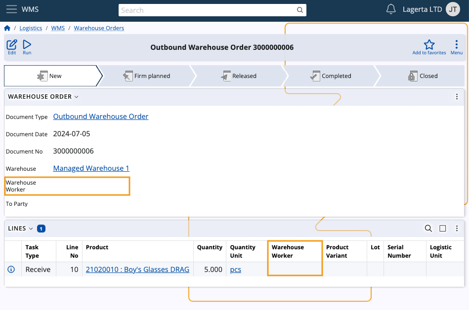

Assign worker
The Assign worker UI function allows setting a worker responsible for a task in a warehouse order document.
Note
This function is accessible only for Warehouse Orders in a state lower than Released. If the current document is Released, you can change the worker by using the Change Worker UI function.
Step-by-step guide
Open a warehouse order in a state New, Planned or Firm planned.

Click on the Run button and choose Assign worker.

This action triggers a dropdown list of available warehouse workers.
The displayed workers are filtered based on the warehouse selected in the document.
Select the preferred worker from the dropdown list and confirm your choice by clicking OK. This executes the function.

After refreshing the document, the Warehouse Worker field will show the selected worker.
Assign multiple workers
Using the Multi select UI feature embedded into panels, you can assign workers to multiple warehouse orders simultaneously.
This saves time and effort as you don't have to go through each order individually.
Navigate to your Warehouse Orders list and choose Multi select from the panel's menu.
Select two or more warehouse orders with or without workers assigned. Make sure they are all in a state lower than Released.
Then, click the Run button and execute the Assign worker function.
Choose a worker to assign and hit OK.
The selected worker will be immediately assigned to the respective orders.